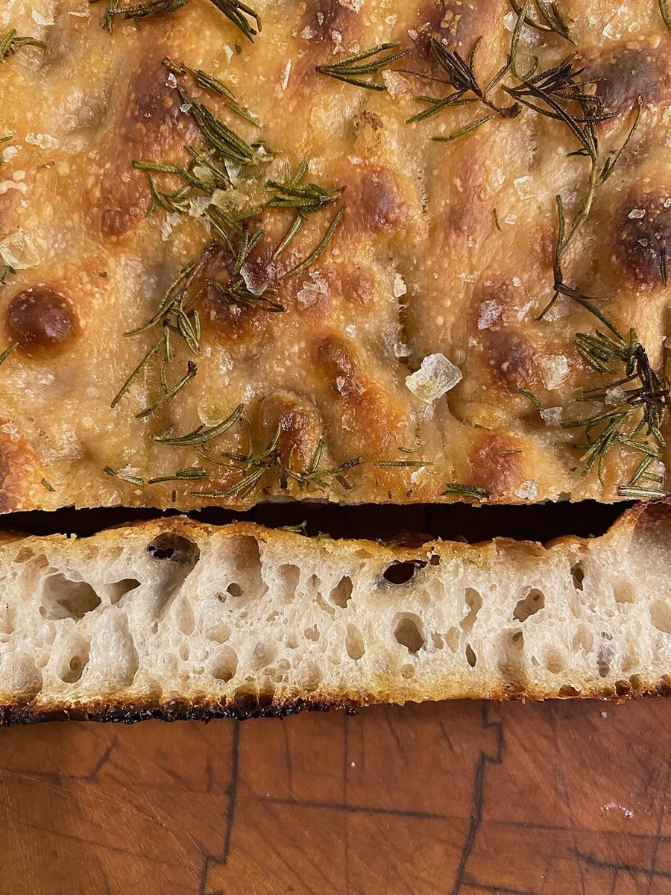

ベーカリー / 愛知県一宮市
糸音いとおと
愛知県一宮市のベーカリー「糸音(いとおと)」のご案内ページです。営業時間やメニューなど、詳しいことは準備中。まずはInstagramをのぞいてみてください。

制作側の連想
糸の「番手」から五ページを作る。
店名の由来は分かりません。このページは、屋号の「糸」という字から、制作側が「糸の太さを表す番手」を連想して組んだものです。番手が小さいほど太く、大きいほど細い糸。五つのページを、20番(太い)から90番(細い)までの糸に見立て、ページごとに文字の太さと線の太さを変えています。制作側の連想で、お店の理念・由来とは無関係です。
五つの番手
太い糸から細い糸へ。
写真は一宮市やお店のものではありません。国外または撮影地不明のフリー素材で、イメージです。
- 20番ホームいちばん太い糸。まずは全体のご案内。

撮影地不明のイメージ - 30番店のこと確認できていることと、制作側の想像を分けて。

国外のイメージ(米国) - 50番メニューメニューと価格は準備中です。

撮影地不明のイメージ - 60番口コミ制作側が創作したイメージ例です。

撮影地不明のイメージ - 90番アクセスいちばん細い糸。所在地と地図。

国外のイメージ(ドイツ)
ご案内
お店のこと(確認できたものだけ)
| 所在地 | 〒491-0376 愛知県一宮市萩原町串作東田面59-2 |
|---|---|
| 電話 | なし |
| 営業時間 | 準備中 |
| 定休日 | 準備中 |
| ご予約 | 準備中 |
| 駐車場 | 準備中 |
| SNS | Instagram @ito.oto |